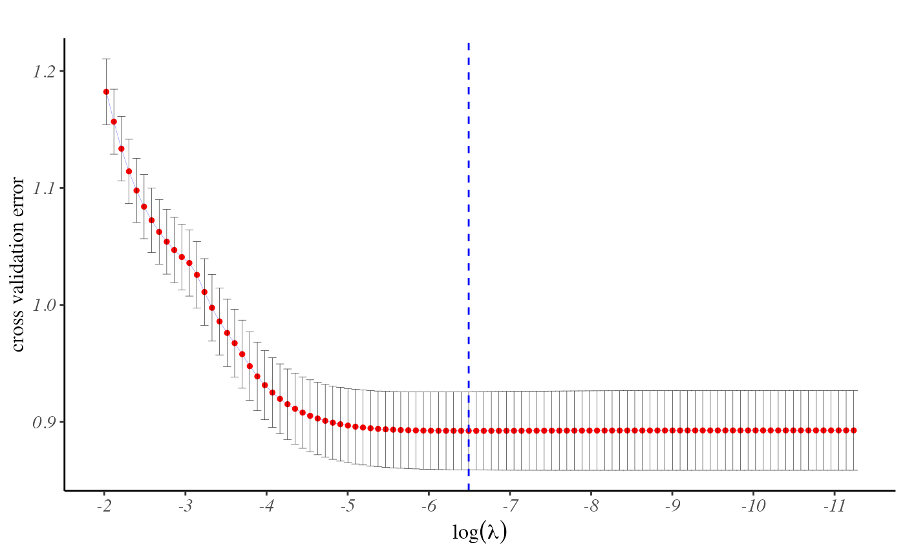
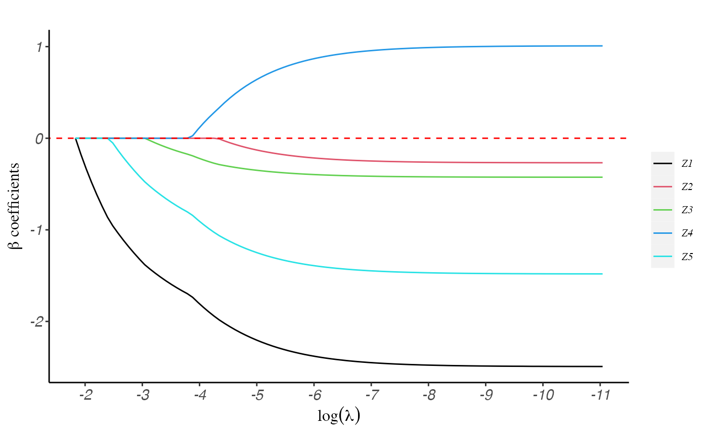
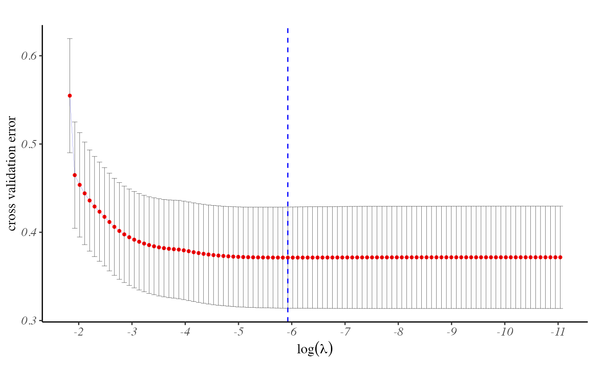
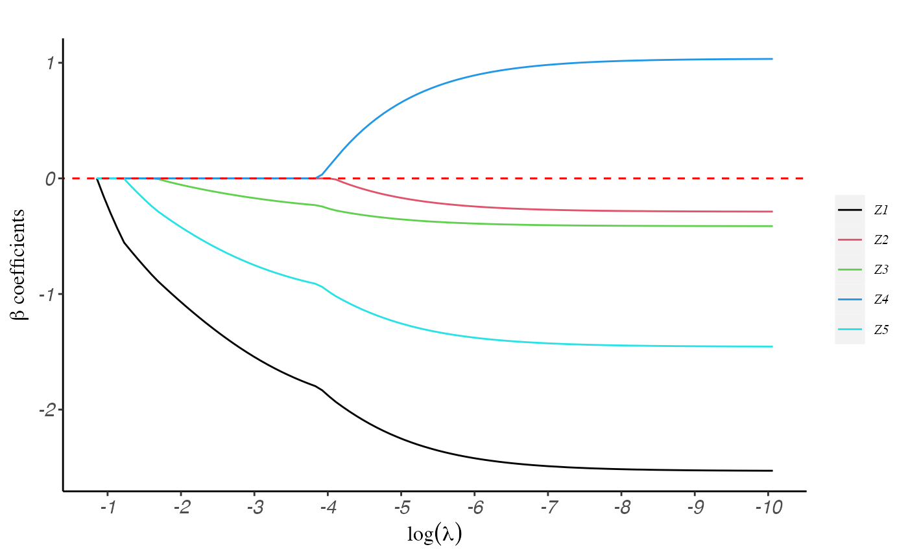
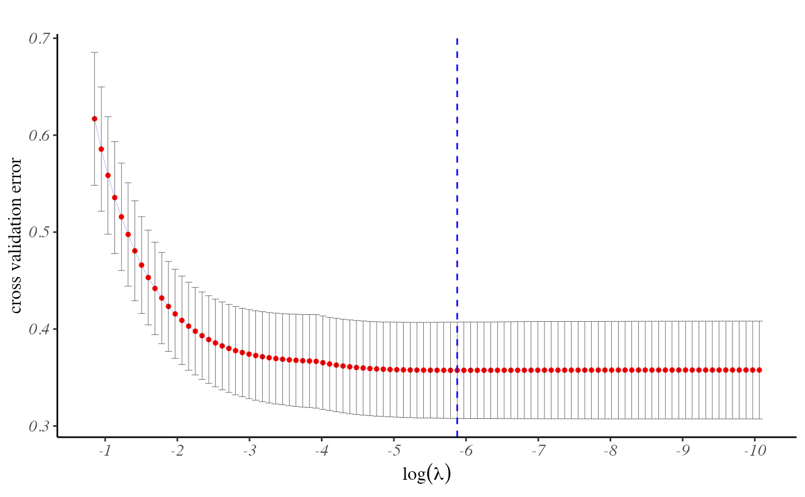
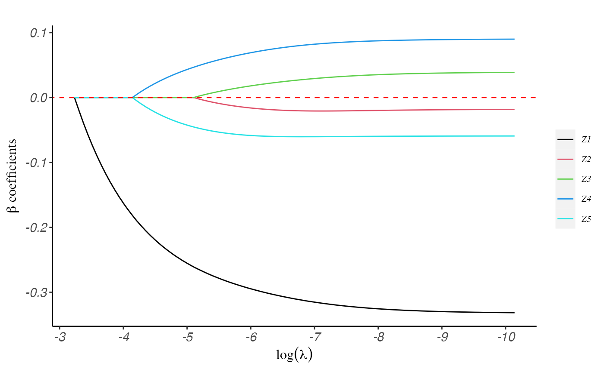
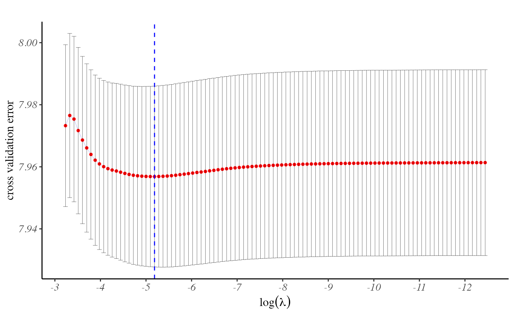

ppLasso
ppLasso.RmdIntroduction:
ppLasso stands as a dedicated R package tailored to
fitting penalized regression models for both generalized linear models
and discrete survival models. Its development was precisely geared
towards efficiently handling data sets with a substantial number of
health providers. Notably, our statistical tool surpasses existing
methods, showcasing a significant margin of improvement in convergence
speed, as substantiated by comprehensive evaluations using simulated
studies and real-world data. In this tutorial, we aim to illustrate the
practical application of ppLasso by employing example
datasets.
Installation:
require("devtools")
require("remotes")
remotes::install_github("UM-KevinHe/grplasso", ref = "main")Quick Start:
In this section, we will explore the fundamental usage of the functions integrated into the current R package, providing a detailed interpretation of the resulting values obtained from these functions. To enhance users’ understanding of the R package, we will employ example datasets, enabling a comprehensive grasp of its functionalities.
library(ppLasso)Generalized Linear Models
To exemplify the process of fitting a generalized linear model, we will utilize the “GLM_Data” dataset included in the package. This dataset consists of five predictors, an indicator for provider information, and a binary outcome variable.
data(GLM_Data)
data <- GLM_Data$data
Y.char <- GLM_Data$Y.char # variable name of outcome variable
prov.char <- GLM_Data$prov.char # variable name of provider indicator
Z.char <- GLM_Data$Z.char # variable names of predictors
head(data)
#> Y Prov.ID Z1 Z2 Z3 Z4 Z5
#> 1 1 10 -0.006 -0.159 0.588 0.378 -1.430
#> 2 0 11 0.862 -0.162 0.243 0.503 0.549
#> 3 0 11 0.453 0.961 0.665 0.522 0.859
#> 4 1 8 -0.286 0.001 0.903 0.886 -0.324
#> 5 0 13 0.564 -0.194 -0.062 -0.792 -0.783
#> 6 1 18 0.676 1.095 2.223 1.367 1.060without grouped covariate
The pp.lasso() function is employed to fit a generalized
linear model when the covariate does not include any group information.
When the user does not specify the regularization coefficient \(\lambda\), our function automatically
generates a sequence of \(\lambda\)
values by default. The sequence starts with the largest \(\lambda\), which penalizes all covariates
to zero, and then gradually decreases \(\lambda\) to allow for variable selection
and modeling flexibility.
fit <- pp.lasso(data, Y.char, Z.char, prov.char)The coef() function serves to provide estimates of the
coefficients in the fitted model. The resulting coefficient matrix is
structured such that the column names correspond to the \(\lambda\) values used in the modeling
process.
coef(fit)$beta[, 1:5]
#> 0.132 0.1202 0.1096 0.0998 0.091
#> Z1 0 0.0000000 0.0000000 0.0000000 0.0000000
#> Z2 0 0.0000000 0.0000000 0.0000000 0.0000000
#> Z3 0 0.1120347 0.2148847 0.3098777 0.3980465
#> Z4 0 0.0000000 0.0000000 0.0000000 0.0000000
#> Z5 0 0.0000000 0.0000000 0.0000000 0.0000000
coef(fit)$gamma[1:5, 1:5]
#> 0.132 0.1202 0.1096 0.0998 0.091
#> 1 -0.2411977 -0.2939898 -0.3431091 -0.3889330 -0.4318211
#> 2 -1.9635362 -1.8742433 -1.7984115 -1.7336457 -1.6779754
#> 3 -1.2089403 -1.1883078 -1.1712888 -1.1572109 -1.1455229
#> 4 -1.9600386 -1.8922127 -1.8332183 -1.7815619 -1.7360041
#> 5 -0.5500569 -0.5698456 -0.5894538 -0.6087582 -0.6276779The plot() function is designed to generate a figure
depicting the regularization path. This path illustrates the behavior of
the coefficients for each predictor variable as the regularization
parameter \(\lambda\) varies. By
visualizing the regularization path, users can gain valuable insights
into the impact of different regularization strengths on the
coefficients, aiding in model interpretation and selection.
plot(fit, label = T)
The predict() function is utilized to generate model
predictions for a given dataset based on the coefficient estimates
obtained from the fitted model. Once the model has been trained using
the pp.lasso() function and the coefficients have been
estimated, the predict function can be applied to new data to obtain
predictions for the outcome variable.
This function offers various types of outputs to suit different analysis needs. For instance, when fitting a penalized logistic regression model, using type = “response” provides the probabilities of “Y = 1” for each observation, while type = “class” provides the predicted class.
predict(fit, data, Z.char, prov.char, lambda = fit$lambda, type = "response")[1:5, 1:5]
#> 0.132 0.1202 0.1096 0.0998 0.091
#> [1,] 0.2874999 0.2996927 0.3106971 0.3206762 0.3297643
#> [2,] 0.2051302 0.2112109 0.2163924 0.2208163 0.2246015
#> [3,] 0.2051302 0.2191951 0.2321638 0.2441339 0.2551989
#> [4,] 0.3947391 0.4208778 0.4449423 0.4671087 0.4875485
#> [5,] 0.2345694 0.2340619 0.2330311 0.2316163 0.2299295
predict(fit, data, Z.char, prov.char, lambda = 0.001, type = "class")[1:5]
#> [1] 1 0 0 1 0with grouped covariate
The utilization of the grp.lasso() function is similar
to the previously mentioned methods, with the added requirement of
providing group information for the covariates. When calling the
function, users should provide the necessary group information to ensure
proper grouping of variables for regularization. However, if the user
does not explicitly provide the group information, the
grp.lasso() function will automatically assume that each
variable is treated as an individual group on its own. This default
behavior simplifies the process for users who do not wish to specify
explicit groups, ensuring that the function can still be applied
effectively without the need for additional input.
group <- GLM_Data$group
fit2 <- grp.lasso(data, Y.char, Z.char, prov.char, group = group)
plot(fit2, label = T)
Please note that for both pp.lasso() and
grp.lasso() functions, the parameter “prov.char” is
optional. In the event that the user does not specify the provider
information for the observations, the program will automatically assume
that all observations originate from the same health provider, resulting
in the generation of one common intercept.
fit.no_prov <- pp.lasso(data, Y.char, Z.char)
coef(fit.no_prov)$beta[, 1:5]
#> 0.2513 0.2289 0.2086 0.1901 0.1732
#> Z1 0 0.0000000 0.0000000 0.0000000 0.0000000
#> Z2 0 0.0000000 0.0000000 0.0000000 0.0000000
#> Z3 0 0.1006904 0.1935559 0.2800125 0.3610722
#> Z4 0 0.0000000 0.0000000 0.0000000 0.0000000
#> Z5 0 0.0000000 0.0000000 0.0000000 0.0000000
coef(fit.no_prov)$gamma[1:5] #"gamma" is treated as the common intercept
#> 0.2513 0.2289 0.2086 0.1901 0.1732
#> -0.5838804 -0.5896897 -0.5974013 -0.6065479 -0.6167685regularization parameter selection for glm problems
The optimal regularization parameter (\(\lambda\)) is determined through
cross-validation. To find the best \(\lambda\), users can employ either the
cv.pp.lasso() or cv.grp.lasso() function,
depending on the specific type of model they are working with. These
cross-validation functions inherit the parameters required for the model
fitting process, providing a seamless and straightforward experience for
users. By default, both functions utilize 10-fold cross-validation.
fit <- cv.pp.lasso(data, Y.char, Z.char, prov.char, nfolds = 10)The plot() function, applied to a
cv.pp.lasso or cv.grp.lasso object, generates
a figure that enables users to assess how the cross-entropy loss changes
with varying values of \(\lambda\). By
observing the plot, users can easily identify the point at which the
cross-entropy loss is minimized.
plot(fit)
Indeed, users can directly use the fit$lambda.min command to obtain the optimal value of \(\lambda\).
fit$lambda.min
#> [1] 0.001259591Discrete Survival Models
The pp.DiscSurv() function is utilized for fitting a
penalized discrete survival model. In contrast to the current R package,
this function does not necessitate data expansion based on discrete time
points, resulting in a significant reduction in memory usage and
convergence time required for operation.
The Surv_Data dataset, included in this package,
comprises of 5 covariates, provider information, observation time, and
event indicator. We will be using this dataset as an example to
illustrate how to utilize it.
data(Surv_Data)
data <- Surv_Data$data
Event.char <- Surv_Data$Event.char
Time.char <- Surv_Data$Time.char
head(data)
#> Prov.ID Z1 Z2 Z3 Z4 Z5 time status
#> 1 4 -1.298 -1.471 -1.346 -1.775 -1.241 1.03 1
#> 2 5 0.192 0.163 0.953 1.083 0.371 12.50 0
#> 3 4 -2.315 -2.038 -1.629 -2.577 -2.008 0.53 1
#> 4 1 -0.198 1.231 0.633 0.739 0.214 6.74 1
#> 5 2 0.469 0.640 -0.583 0.161 0.927 12.50 0
#> 6 4 -1.445 -1.848 -3.024 -2.117 -1.894 0.53 1
fit <- pp.DiscSurv(data, Event.char, prov.char, Z.char, Time.char)The pp.DiscSurv() function yields three main sets of
coefficients as its primary output. These coefficients pertain to the
covariate estimates, log-transformed baseline hazard for various time
points, and provider effects. To avoid multicollinearity problems, we
designate the first provider as the reference group.
Similar to the GLM fitting functions mentioned earlier,
pp.DiscSurv() is also furnished with a coef()
function. This function facilitates the provision of coefficient
estimates within the fitted penalized discrete survival model across the
entire sequence of \(\lambda\) values
employed in the modeling procedure.
coef(fit)$beta[, 1:5]
#> 0.1601 0.1458 0.1329 0.1211 0.1103
#> Z1 0 -0.1735757 -0.3325774 -0.4793679 -0.6155647
#> Z2 0 0.0000000 0.0000000 0.0000000 0.0000000
#> Z3 0 0.0000000 0.0000000 0.0000000 0.0000000
#> Z4 0 0.0000000 0.0000000 0.0000000 0.0000000
#> Z5 0 0.0000000 0.0000000 0.0000000 0.0000000
coef(fit)$gamma[, 1:5]
#> 0.1601 0.1458 0.1329 0.1211 0.1103
#> 1 0.0000000 0.0000000 0.000000 0.0000000 0.0000000
#> 2 -4.5665147 -4.3516946 -4.162992 -3.9945779 -3.8425705
#> 3 -0.7478311 -0.7116142 -0.682481 -0.6580980 -0.6367834
#> 4 1.2412090 1.1456446 1.059286 0.9815198 0.9121089
#> 5 -2.3399410 -2.1966372 -2.070536 -1.9577270 -1.8555876
coef(fit)$alpha[, 1:5]
#> 0.1601 0.1458 0.1329 0.1211 0.1103
#> [Time: 0.53] -1.668065 -1.747753 -1.824209 -1.898663 -1.971909
#> [Time: 1.03] -1.480994 -1.526815 -1.571328 -1.615488 -1.659886
#> [Time: 3.92] -1.622145 -1.641556 -1.661848 -1.683563 -1.706991
#> [Time: 6.74] -1.251585 -1.257340 -1.264124 -1.272503 -1.282795
#> [Time: 12.5] -1.781635 -1.780095 -1.780526 -1.783340 -1.788771Users have the option to utilize the plot() function,
which generates a figure illustrating the regularization path. This
visual representation showcases the behavior of the coefficients for
each predictor variable as \(\lambda\)
varies.
plot(fit, label = T)
The predict() function is employed to generate model
predictions for a given dataset using the coefficient estimates obtained
from the fitted model. It is essential to note that the discrete time
points within the prediction data set must align with the discrete time
points used during model fitting. If they do not match, the baseline
hazard of mismatches cannot be estimated accurately.
predict(fit, data, Event.char, prov.char, Z.char, Time.char, lambda = fit$lambda, type = "response", which.lambda = fit$lambda[1])[1:5,]
#> Individual [Time: 0.53] [Time: 1.03] [Time: 3.92] [Time: 6.74] [Time: 12.5]
#> 1 1 0.1586823 0.1852773 NA NA NA
#> 2 2 0.1586823 0.1852773 0.1649092 0.2224258 0.1441013
#> 3 3 0.1586823 NA NA NA NA
#> 4 4 0.1586823 0.1852773 0.1649092 0.2224258 NA
#> 5 5 0.1586823 0.1852773 0.1649092 0.2224258 0.1441013regularization parameter selection for discrete survival models
The optimal regularization parameter (\(\lambda\)) is determined through
cross-validation, utilizing the cross-validation error as the guiding
metric. Users can identify the best \(\lambda\) value by employing the
cv.pp.DiscSurv() function.
fit <- cv.pp.DiscSurv(data, Event.char, prov.char, Z.char, Time.char, nfolds = 10, trace.cv = T)
#> Starting CV fold #1...
#> Starting CV fold #2...
#> Starting CV fold #3...
#> Starting CV fold #4...
#> Starting CV fold #5...
#> Starting CV fold #6...
#> Starting CV fold #7...
#> Starting CV fold #8...
#> Starting CV fold #9...
#> Starting CV fold #10...Users can either utilize the plot() function or directly
access the fit$lambda.min command to identify the optimal value
of \(\lambda\) at which the
cross-entropy loss is minimized.
plot(fit)
fit$lambda.min
#> [1] 0.003215807Discrete survival model with no center information provided
Similar with our GLM-related functions, we present a solution for fitting a discrete survival model without requiring provider information. This approach tackles the issue commonly encountered with existing statistical tools used to fit discrete survival models, which often necessitate data expansion, leading to significantly slow convergence.
For ease of use, we have introduced a new function called
DiscSurv(), designed to facilitate a similar user
experience to pp.DiscSurv(). However, the key difference
lies in the fact that DiscSurv() no longer demands provider
information from the user, meaning that all observations are now treated
as originating from the same healthcare provider.
Additionally, we have provided the cv.DiscSurv()
function to aid users in selecting optimal \(\lambda\). Moreover, the
coef(), predict(), and plot()
functions have also been thoughtfully incorporated.
fit <- DiscSurv(data, Event.char, Z.char, Time.char) # no provider information required
coef(fit, lambda = fit$lambda)$alpha[, 1:10] #time effect
#> 0.4261 0.3882 0.3537 0.3223 0.2937 0.2676
#> [Time: 0.53] -1.979501 -1.970055 -1.977003 -1.996580 -2.025988 -2.063321
#> [Time: 1.03] -2.110213 -2.069229 -2.043936 -2.030857 -2.027101 -2.024921
#> [Time: 3.92] -2.484907 -2.418504 -2.367851 -2.329504 -2.300521 -2.271905
#> [Time: 6.74] -2.355695 -2.272311 -2.204520 -2.148985 -2.102800 -2.057123
#> [Time: 12.5] -2.958691 -2.863140 -2.784495 -2.719193 -2.664047 -2.607966
#> 0.2438 0.2221 0.2024 0.1844
#> [Time: 0.53] -2.108353 -2.159477 -2.215458 -2.275240
#> [Time: 1.03] -2.030027 -2.041112 -2.057105 -2.077161
#> [Time: 3.92] -2.250837 -2.236107 -2.226712 -2.221912
#> [Time: 6.74] -2.019051 -1.987399 -1.961180 -1.939732
#> [Time: 12.5] -2.560100 -2.519218 -2.484282 -2.454667
coef(fit, lambda = fit$lambda)$beta[, 1:10] #covariate coefficient
#> 0.4261 0.3882 0.3537 0.3223 0.2937 0.2676 0.2438
#> Z1 0 -0.1556065 -0.2988513 -0.4321738 -0.55517516 -0.62749516 -0.6973297
#> Z2 0 0.0000000 0.0000000 0.0000000 0.00000000 0.00000000 0.0000000
#> Z3 0 0.0000000 0.0000000 0.0000000 0.00000000 0.00000000 0.0000000
#> Z4 0 0.0000000 0.0000000 0.0000000 0.00000000 0.00000000 0.0000000
#> Z5 0 0.0000000 0.0000000 0.0000000 -0.00308954 -0.06678773 -0.1269325
#> 0.2221 0.2024 0.1844
#> Z1 -0.7649437 -0.8303314 -0.891731087
#> Z2 0.0000000 0.0000000 0.000000000
#> Z3 0.0000000 0.0000000 -0.005918913
#> Z4 0.0000000 0.0000000 0.000000000
#> Z5 -0.1839682 -0.2385202 -0.287438577
plot(fit, label = T)
cv.fit <- cv.DiscSurv(data, Event.char, Z.char, Time.char, nfolds = 10, trace.cv = T)
#> Starting CV fold #1...
#> Starting CV fold #2...
#> Starting CV fold #3...
#> Starting CV fold #4...
#> Starting CV fold #5...
#> Starting CV fold #6...
#> Starting CV fold #7...
#> Starting CV fold #8...
#> Starting CV fold #9...
#> Starting CV fold #10...
plot(cv.fit)
predict(fit, data, Event.char, Z.char, Time.char, lambda = fit$lambda, type = "response", which.lambda = cv.fit$lambda.min)[1:5,]
#> Individual [Time: 0.53] [Time: 1.03] [Time: 3.92] [Time: 6.74] [Time: 12.5]
#> 1 1 0.488457674 0.748327433 NA NA NA
#> 2 2 0.009739111 0.029715245 0.041766283 0.07970705 0.055379404
#> 3 3 0.953383639 NA NA NA NA
#> 4 4 0.019696418 0.058881824 0.081764615 0.15033948 NA
#> 5 5 0.001620927 0.005030234 0.007143957 0.01409624 0.009585309Stratified Cox Models
Our R package offers the Strat.cox() and
cv.strat_cox() functions designed for fitting penalized
stratified Cox models. In the context of our intended scenario, each
healthcare provider is considered a distinct stratum. The functionality
of both Strat.cox() and cv.strat_cox() extends
to the incorporation of group information among variables, achieved by
configuring the “group” parameter.
We employ the Cox_Data simulation dataset, which is
included within this package, to illustrate the utilization of these two
functions. This dataset encompasses five covariates, a provider
indicator (which serves as stratum information), as well as follow-up
time and event indicators.
data(Cox_Data)
data <- Cox_Data$data
head(data)
#> Prov.ID Z1 Z2 Z3 Z4 Z5 status time
#> [1,] 11 3.431888 4.397010 3.800101 4.809899 4.049038 1 0.4984520
#> [2,] 4 2.789097 2.616714 3.401736 3.510431 3.650074 0 3.0000000
#> [3,] 9 5.451523 4.009896 5.473275 4.772835 4.708293 1 0.5987062
#> [4,] 15 2.421634 2.284766 1.747758 2.182607 1.072065 1 0.6406964
#> [5,] 9 5.827436 5.238138 5.536604 5.265083 4.735679 0 3.0000000
#> [6,] 18 2.140707 1.773304 1.792366 1.774502 3.209669 0 3.0000000Users can utilize the coef() function to obtain
coefficient estimates for the covariates across the complete sequence of
\(\lambda\) values.
coef(fit)[, 1:5]
#> 0.0394 0.0359 0.0327 0.0298 0.0272
#> Z1 0 -0.02638174 -0.05109539 -0.07358232 -0.09407973
#> Z2 0 0.00000000 0.00000000 0.00000000 0.00000000
#> Z3 0 0.00000000 0.00000000 0.00000000 0.00000000
#> Z4 0 0.00000000 0.00000000 0.00000000 0.00000000
#> Z5 0 0.00000000 0.00000000 0.00000000 0.00000000The plot() function facilitates users in visualizing the
regularization path.
plot(fit, label = T)
Likewise, the cv.strat_cox() function can be employed for
cross-validation, and the plot() function can be utilized
to visualize cross-validation error.
cv.fit <- cv.strat_cox(data, Event.char, prov.char, Z.char, Time.char, group = c(1, 2, 2, 3, 3), nfolds = 10, se = "quick")
cv.fit$lambda.min
#> [1] 0.005590389
plot(cv.fit)
Linear Models
For the convenience of a select group of users dealing with extensive
healthcare provider data, we offer the prof_lkd.linear()
function, which help them fit unpenalized linear models. Enhanced
features and functionalities are currently in the developmental phase
and will be forthcoming.
data(linear_data)
data <- linear_data$data
Y.char <- linear_data$Y.char
prov.char <- linear_data$prov.char
Z.char <- linear_data$Z.char
fit <- prof_lkd.linear(data, Y.char, Z.char, prov.char)
fit$beta
#> Y
#> z1 -0.3523049
#> z2 2.0765558
#> z3 1.1505062
#> z4 -0.1930814
#> z5 0.7696218
#> z6 -0.5543829
#> z7 -0.9292752
#> z8 1.4166953
#> z9 2.9488029
#> z10 0.9256138